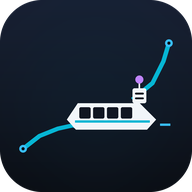
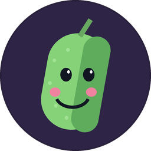

🚢
피클마린트래킹
AIS LIVE
📲 앱 설치
🔄
최신 갱신
🔍
조회

피클마린 모바일 앱
홈 화면에 설치해 전체화면 앱으로 쓰세요
📲 앱 설치하기
✕
🗺️
지도 관제
💬
피클 브리핑
📐 실시간 항적도
📍
구글지도 6x 조망
🌐
VesselFinder 실시간

ㅇ
피클
워니 님의 AI 비서
실시간 해상 관제 브리핑 ✨
🥒 자기 피클로 담당자 교체
🗑️
🥒
자기 피클로 담당자 교체
×
ㅇ
피클
워니 님을 위한 해상 관제 브리핑
내 피클(비서) 이름
내 이름 / 호칭
피클 자음 캐릭터 선택
피클 테마 컬러